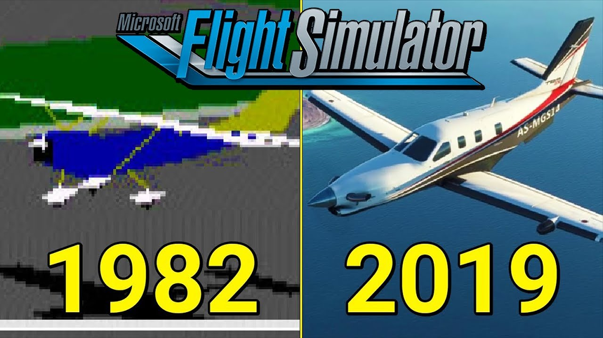

Criadores
Inventado por Bruce Artwick e criado pela Microsoft e desenvolvido pela falecida subLOGIC junstamente com a Aces Studio e Asobo Studio, Microsoft Flight Simulator foi uma verdadeira inovação no marco dos Simuladores. O Microsoft Flight Simulator começou ser desenvolvido como um conjunto de artigos sobre gráficos de computador escritos por Bruce Artwick em 1976 sobre programas de gráficos 3D. Em 1979 a subLOGIC lançou o Flight Simulator para o Apple II. Em 1980 a subLOGIC lançou uma versão para o TRS-80, e em 1982 eles licenciaram uma versão IBM PC com gráficos CGA para a Microsoft, o qual foi lançado como Microsoft Flight Simulator 1.0. A subLOGIC continuou a desenvolver o produto para outras plataformas, e seu melhorado Flight Simulator 2.0 foi lançado para o Apple II em 1983, para o Commodore 64 e o Atari 800 em 1984, e para o Commodore Amiga e Atari ST em 1986.
Microsoft Flight
Em 17 de agosto de 2010 a Microsoft anunciou na Gamescom 2010 uma "nova versão" do Flight Simulator. Ainda em desenvolvimento, se chamaria Microsoft Flight, e de acordo com a empresa, traria uma nova perspectiva para um gênero com muitos anos de vida. Porém tal não aconteceu, sendo um fracasso.Lançado em 29 de fevereiro de 2012 o Microsoft Flight foi descontinuado em menos de seis meses após seu lançamento. Um dos principais motivos para descontinuar seria o fato de ter sido muito criticado por fãs e amantes do Flight Simulator por ter perdido totalmente o foco da série e pela "falta de realismo", sendo considerado apenas um "jogo". Apesar de ter sido descontinuado, o Microsoft Flight ainda continua disponível para download em seu site oficial e dispõe de seu conteúdo extra (cenários, aeronaves, missões, etc) que continuará a ser pago.
| Bruce Artwick Criador de Flight Simulator | Evolução do Simulador Até os Dias atuais |